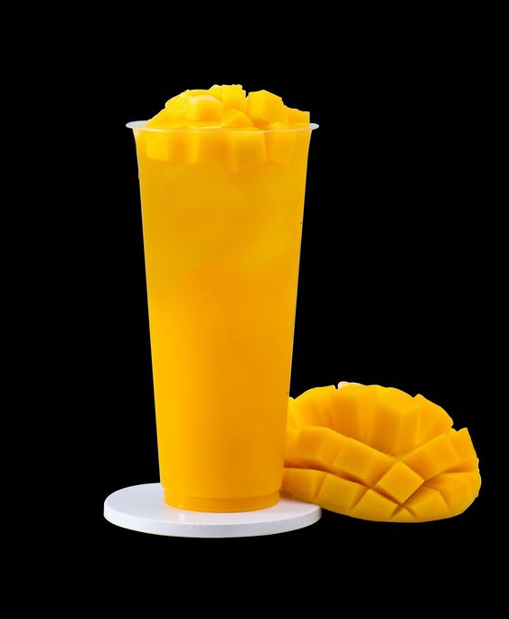

Mango Smoothie

Description
Make this Yogurt-Free Mango Smoothie recipe for a filling breakfast that will help you begin your day by taking good care of your body from the inside out!
Ingredients
- Fresh or Frozen Mango.
- Frozen banana.
Steps:
-
Blend chopped mango, banana slices, ice-cold water, in a high-speed blender and blend until smooth and you reach the desired consistency (about 40 seconds).
-
Then pour the smoothie into a tall glass and optionally garnish with mint leaves.